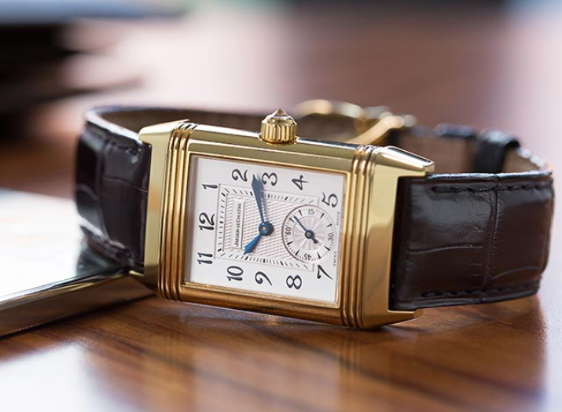
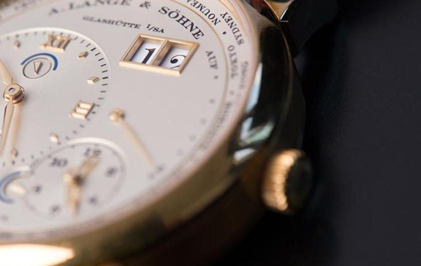

Explore the Rich History of Vintage Watches

The History of Wristwatches
Published on 15 September 1979
Discover the evolution of wristwatches, from their humble beginnings as practical military accessories to becoming stylish fashion statements. Explore how wristwatches have transformed over the years, reflecting changes in technology and culture.
Read More

The First Watch
Published on 18 March 1998
Uncover the fascinating story behind the creation of the first watch. Learn about the inventors, innovations, and challenges that led to the development of this groundbreaking timekeeping device, laying the foundation for the world of watches we know today.
Read More

Importance and Significance of Vintage Watches
Published on 07 February 2001
Explore why vintage watches hold a special place in the hearts of collectors and enthusiasts. Dive into the unique qualities, craftsmanship, and historical value that make vintage watches more than just timekeeping devices—they are cherished artifacts with a rich story to tell.
Read More